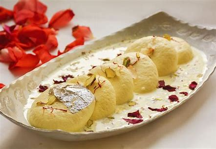

Gulab Jamun
Ingridents
- cup full-fat milk powder
- tablespoons all-purpose flour
- 1/8 teaspoon baking powder
- 1 tablespoon ghee (You can find it at the store or make ghee from scratch.)
- 5 to 6 tablespoons milk, as needed
- Oil for deep-frying
Process
- Step 1: Prepare the dough
- Step 2: Let the dough rest
- Step 3: Prepare the sugar syrup
- Step 4: Roll the jamuns
- Step 5: Fry the jamuns
- Step 6: Add jamuns to the sugar syrup
- Step 7: Serving in a bowl
Rasmalai
Ingridents
- Milk 10 cups
- White vinegar 8 teaspoons
- Cornflour/ corn starch 1/2 teaspoon
- For Syrup Sugar 1.2 kilograms
- Milk 2 tablespoons
Process
- Step 1 For the chhenna, bring the milk to a boil over high heat. Set aside to cool slightly to 77°C/170°F.
- Step 2:Mix the vinegar in one and three-fourth cups of water and add to the hot milk. Stir lightly till the milk curdles. Add three to four cups of water and a few ice cubes and stir.
- Step 3: Strain the chhenna through a piece of muslin and squeeze to remove all the water. You should have 250 grams of chhenna.
- Step 4: Transfer the chhenna onto a worktop. Mix together half teaspoon of refined flour and the cornflour and add to the chhenna. Knead, pressing with the heel of your hand, till the mixture is smooth.
- Step 5:Divide into twenty-five portions and roll into balls and then press lightly to make patties, taking care that there are no cracks. Mix the remaining refined flour with half a cup of water and set aside.
- Step 6:To make the syrup, cook the sugar with five cups of water, stirring continuously till all the sugar dissolves. Add the milk and let the syrup come to a boil. Collect the scum which rises to the surface with a ladle and discard.
- Step 7:Continue to cook the syrup for a few minutes longer. Strain the syrup into a bowl
- Step 8 Take one cup of the syrup, reserving the rest, in a deep, wide non-stick pan and add four to five cups of water. When the syrup begins to boil add the chhenna patties. Add half the flour-water mixture. The syrup will froth. Cook, gently agitating the syru
- Step 9 Chill for at least two hours so that the chhenna patties absorb the rabdi. Serve.
